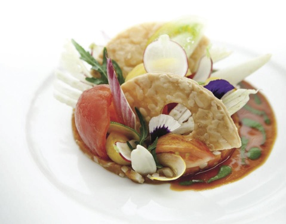
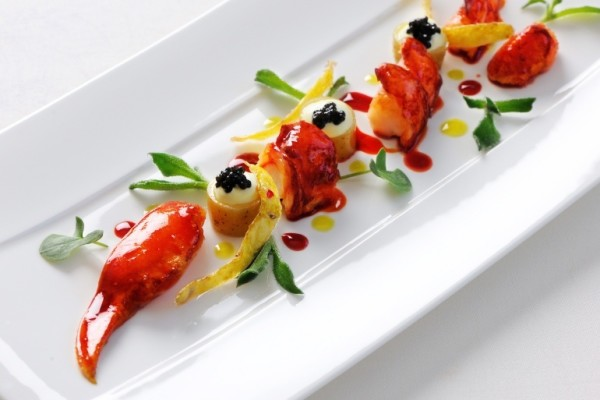
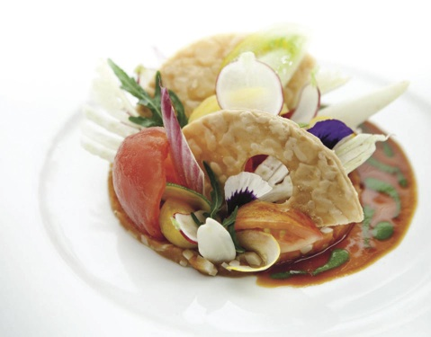
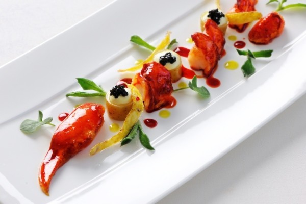

HISTORY OF THE MICHELIN GUIDE, Once upon a time, in the heart of France…
It all started way back in 1889, in Clermont-Ferrand, when the Michelin brothers founded the Michelin Tire Company (Manufacture Francaise des Pneumatiques Michelin) – this was at a time when driving was considered quite an adventure!
In 1900, fewer than 3,000 cars existed in France. The Michelin brothers hit upon the idea of creating a small guide packed with useful information for the new pioneers of the road, such as where to fill up with petrol or change a tire, as well as where to eat and sleep.
The Michelin Guide was born!
The purpose of the guide was obvious: to track down the best hotels and restaurants across the country. To do this, Michelin employed a veritable armada of anonymous professional inspectors to scour every region – something that had never before been attempted!
Over the years, bumpy roads were replaced by smoother highways and the company continued to develop, as indeed did the country’s cuisine: cooks became chefs, artisans developed artists and traditional dishes were transformed into works of art. All the while, the MICHELIN Guide, by now a faithful travel companion, kept pace with – and encouraged – these changes. The most famous distinction awarded by the guide was created in 1926: the “etoile de bonne table” – the famous star which quickly established itself as the reference in the world gastronomy!
 


